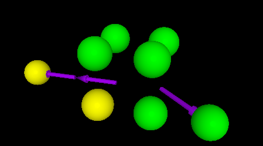
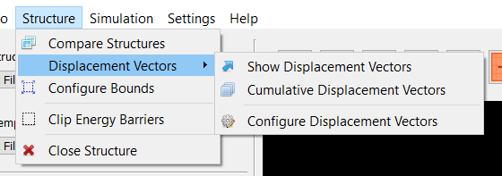
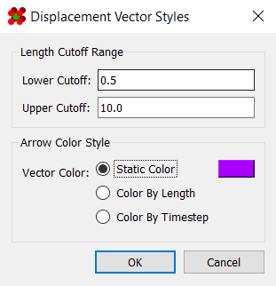
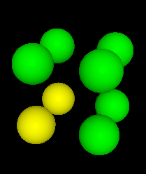
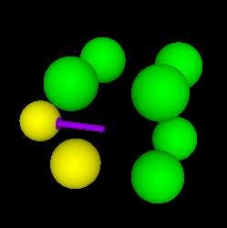
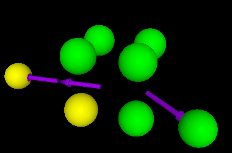
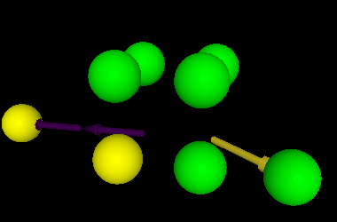
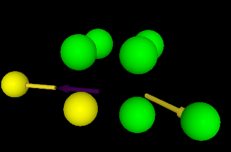

Displacement Vectors
"Displacement vectors" allow you to compare atom positions from between frames on the timeline.

It should be noted that this feature is only enabled when in timeline mode.
Activating Displacement Vectors
Displacement vectors are enabled using the options under
Structure > Displacement Vectors.

Here, you can show/hide displacement vectors using "Show Displacement Vectors" option. By default, this will only show displacements between successive frames. To show all displacements up to the current frame, toggle "Cumulative Displacement Vectors."
It must be noted that, for large structures with long timelines, calculating these displacement vectors ceases to be a real-time task. Although they are calculated automatically when loading a structure, it may take a few seconds before cumulative displacement vectors can appear.
Lastly, any displacement vector involving an atom that is not visible in the current frame will not be shown.
Styling Displacement Vectors
Clicking on the "Configure Displacement Vectors" option in the menu bar launches a dialog containing several options for configuring how displacements are shown. These include setting range cutoffs, as well as colorization:

The lower cutoff and upper cutoff options hide any displacement vectors whose lengths fall outside that range.
Meanwhile, there are three options for coloring displacement vectors: static color, color by length, and color by timestep.
The first option, static color, is self-explanatory. All displacement vectors are rendered with the provided color:
 1. |
 2. |
 3. |
The second option, color by length, renders vectors according to their length. Their color is chosen using the viridis colormap, with the range chosen from the minimum and maximum lengths of all visible displacements.

The third option, color by time, renders vectors according to the time index at which they occurred. Their color is chosen using the viridis colormap, with the range chosen from the minimum and maximum timestep of all visible displacements.
